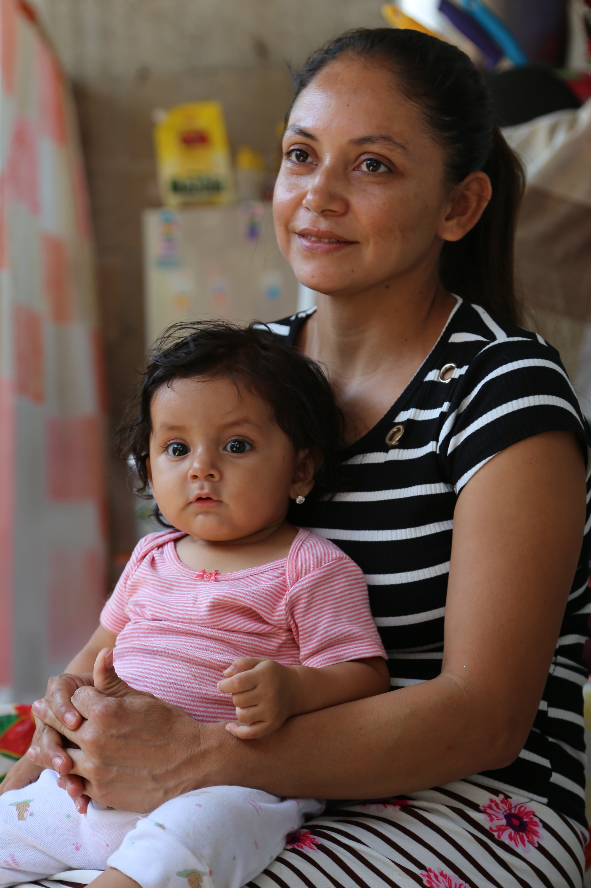

24 Jun 2026
24 Jun 2026
Comunicación Social · Ministerio de Desarrollo Social
24 Jun 2026 17 Jun 2026
17 Jun 2026 17 Jun 2026
17 Jun 2026 18 Jun 2026
18 Jun 2026
18 Jun 202617 Jun 2026 17 Jun 202617 Jun 2026
17 Jun 202617 Jun 2026 17 Jun 2026
17 Jun 2026 17 Jun 2026
17 Jun 2026 17 Jun 2026
17 Jun 2026 17 Jun 2026
17 Jun 2026 17 Jun 2026
17 Jun 2026 17 Jun 2026
17 Jun 2026 17 Jun 202617 Jun 2026
17 Jun 202617 Jun 2026 17 Jun 2026
17 Jun 2026 15 Jun 202615 Jun 202612 Jun 2026
15 Jun 202615 Jun 202612 Jun 2026